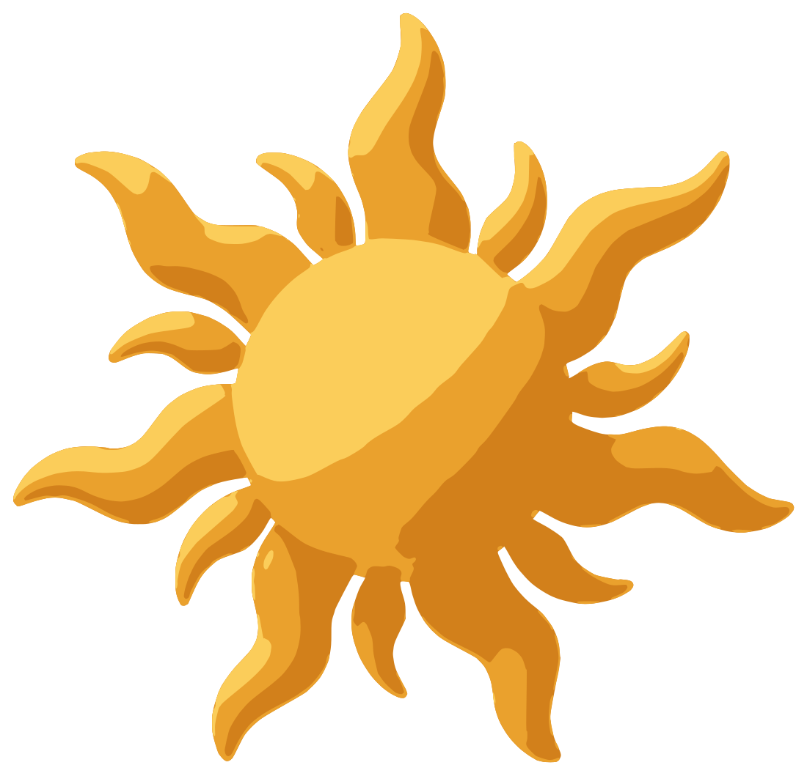
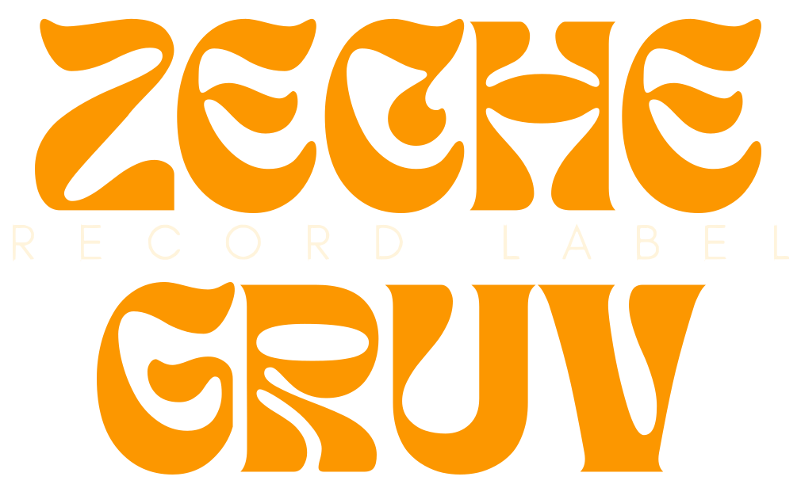

<!doctype html>
<html lang="es">
<head>
<meta charset="utf-8">
<title>ZECHE GRUV — títulos del tour</title>
<!--
  Placas de apertura y cierre del tour (y las etiquetas de cada parte).
  Se renderizan cuadro por cuadro con edicion/editar.js: todas las animaciones
  son CSS y el script avanza su tiempo exacto antes de cada captura, así el
  movimiento sale perfecto a 30 fps.
  Parámetros: ?placa=intro|cierre|etiqueta&fmt=h|v&texto=...
-->
<style>
  @font-face { font-family: "Bricolage Grotesque"; font-weight: 700; src: url(../demo/fonts/bricolage-grotesque-latin-700-normal.woff2) format("woff2"); }
  @font-face { font-family: "Bricolage Grotesque"; font-weight: 800; src: url(../demo/fonts/bricolage-grotesque-latin-800-normal.woff2) format("woff2"); }
  @font-face { font-family: "Geist"; font-weight: 500; src: url(../demo/fonts/geist-latin-500-normal.woff2) format("woff2"); }
  @font-face { font-family: "Geist"; font-weight: 600; src: url(../demo/fonts/geist-latin-600-normal.woff2) format("woff2"); }
  @font-face { font-family: "Geist Mono"; font-weight: 500; src: url(../demo/fonts/geist-mono-latin-500-normal.woff2) format("woff2"); }
  :root {
    --brown: #4B2509; --brown-dark: #241105; --deep: #1B0D04; --orange: #F07800; --sun: #F5A623; --cream: #FFF4DC; --beige: #F0E0C0;
    --spring: cubic-bezier(.16, 1, .3, 1); --out: cubic-bezier(.23, 1, .32, 1); --in: cubic-bezier(.55, 0, 1, .45);
  }
  * { box-sizing: border-box; margin: 0; }
  html, body { width: 100vw; height: 100vh; overflow: hidden; }
  body { background: var(--deep); color: var(--cream); font-family: "Geist", sans-serif; }
  body.is-etiqueta { background: transparent; }

  /* ---------- Fondo: malla cálida + grano + viñeta (5 capas) ---------- */
  .stage { position: fixed; inset: 0; overflow: hidden; background: radial-gradient(120% 90% at 50% 40%, var(--brown) 0%, var(--brown-dark) 58%, var(--deep) 100%); }
  .blob { position: absolute; border-radius: 50%; opacity: .6; }
  .blob.b1 { width: 62vmax; height: 62vmax; left: -18vmax; top: -22vmax; background: radial-gradient(circle, rgba(240,120,0,.55), transparent 65%); animation: drift1 9s ease-in-out both; }
  .blob.b2 { width: 54vmax; height: 54vmax; right: -20vmax; bottom: -24vmax; background: radial-gradient(circle, rgba(245,166,35,.42), transparent 65%); animation: drift2 9s ease-in-out both; }
  @keyframes drift1 { from { transform: translate(0, 0) scale(1); } to { transform: translate(6vmax, 4vmax) scale(1.08); } }
  @keyframes drift2 { from { transform: translate(0, 0) scale(1.05); } to { transform: translate(-5vmax, -3vmax) scale(.96); } }
  .grain { position: absolute; inset: -10%; opacity: .09; mix-blend-mode: overlay;
    background-image: url("data:image/svg+xml;utf8,<svg xmlns='http://www.w3.org/2000/svg' width='220' height='220'><filter id='n'><feTurbulence type='fractalNoise' baseFrequency='.85' numOctaves='3' stitchTiles='stitch'/></filter><rect width='100%' height='100%' filter='url(%23n)'/></svg>");
    animation: grain 1s steps(6) infinite; }
  @keyframes grain { 0% { transform: translate(0, 0); } 20% { transform: translate(-3%, 2%); } 40% { transform: translate(2%, -3%); } 60% { transform: translate(-2%, -1%); } 80% { transform: translate(3%, 3%); } 100% { transform: translate(0, 0); } }
  .vignette { position: absolute; inset: 0; background: radial-gradient(ellipse at center, transparent 55%, rgba(0,0,0,.55) 100%); }

  /* ---------- Contenido ---------- */
  .content { position: absolute; inset: 0; display: flex; flex-direction: column; align-items: center; justify-content: center; text-align: center; padding: 0 8vw; }
  .sun { width: 15vmin; height: auto; margin-bottom: 4.2vmin; 
    animation: sunIn 1.2s var(--spring) .1s both, sunSpin 14s linear .1s infinite; }
  @keyframes sunIn { from { opacity: 0; transform: scale(.55) rotate(-40deg); } to { opacity: 1; transform: scale(1) rotate(0); } }
  @keyframes sunSpin { to { rotate: 360deg; } }
  .eyebrow { font-family: "Geist Mono", monospace; font-weight: 500; font-size: 1.9vmin; letter-spacing: .32em; text-transform: uppercase; color: var(--sun); margin-bottom: 3vmin;
    animation: rise .9s var(--spring) .45s both; }
  .headline { font-family: "Bricolage Grotesque", sans-serif; font-weight: 800; font-size: 11vmin; line-height: .98; letter-spacing: -.04em; }
  .headline .w { display: inline-block; white-space: pre; animation: word 1s var(--spring) both; }
  @keyframes word { from { opacity: 0; transform: translateY(.45em) scale(.96); filter: blur(10px); } to { opacity: 1; transform: none; filter: none; } }
  @keyframes rise { from { opacity: 0; transform: translateY(2.4vmin); } to { opacity: 1; transform: none; } }
  .sub { margin-top: 3.6vmin; font-size: 3.1vmin; font-weight: 500; color: var(--beige); animation: rise 1s var(--spring) both; }
  .accent { color: var(--orange); }
  .logo { width: 30vmin; margin-top: 5vmin; animation: rise 1s var(--spring) both; }
  .pill { margin-top: 3.2vmin; display: inline-flex; align-items: center; gap: 1.2vmin; padding: 1.5vmin 3vmin; border-radius: 999px; background: var(--cream); color: var(--brown-dark); font-weight: 600; font-size: 2.6vmin; animation: rise 1s var(--spring) both; }
  .pill i { width: 1.2vmin; height: 1.2vmin; border-radius: 50%; background: var(--orange); }

  /* Vertical: más grande, pensado para el celu */
  .v .sun { width: 26vw; }
  .v .eyebrow { font-size: 3vw; letter-spacing: .18em; }
  .v .headline { font-size: 13.2vw; }
  .v .sub { font-size: 4.8vw; }
  .v .logo { width: 52vw; }
  .v .pill { font-size: 4.2vw; padding: 2.4vw 5vw; gap: 2vw; }
  .v .pill i { width: 2vw; height: 2vw; }

  /* Salida de las placas: más rápida que la entrada */
  .out { animation: exit .45s var(--in) both; }
  @keyframes exit { to { opacity: 0; transform: scale(.97) translateY(-1.5vmin); filter: blur(6px); } }

  /* ---------- Etiqueta (se superpone a la grabación, fondo transparente) ---------- */
  .tag { position: absolute; left: 0; top: 0; display: inline-flex; align-items: center; gap: 14px; padding: 16px 26px 16px 18px; border-radius: 999px;
    background: var(--cream); color: var(--brown-dark); font-family: "Bricolage Grotesque", sans-serif; font-weight: 800; font-size: 34px; letter-spacing: -.02em; white-space: nowrap;
    box-shadow: 0 18px 44px rgba(0,0,0,.42), 0 2px 0 rgba(255,255,255,.4) inset; }
  .tag img { width: 40px; height: 40px; }
  .v .tag { font-size: 52px; padding: 22px 38px 22px 24px; gap: 18px; }
  .v .tag img { width: 58px; height: 58px; }
</style>
</head>
<body>
<script>
  const q = new URLSearchParams(location.search);
  const placa = q.get("placa") || "intro";
  const fmt = q.get("fmt") || "h";
  document.documentElement.classList.add(fmt);
  const words = (text, start, step) => text.split(" ").map((w, i) => `<span class="w" style="animation-delay:${(start + i * step).toFixed(2)}s">${w}${i < text.split(" ").length - 1 ? " " : ""}</span>`).join("");
  const SUN = '';
  // El grano se suma después con FFmpeg (mucho más rápido que dibujarlo en cada cuadro).
  const BG = '<div class="stage"><div class="blob b1"></div><div class="blob b2"></div><div class="vignette"></div></div>';
  if (placa === "etiqueta") {
    document.body.classList.add("is-etiqueta");
    document.body.innerHTML = `<div class="tag" id="tag">${q.get("texto") || ""}</div>`;
  } else if (placa === "intro") {
    // Pregunta que el artista se hace siempre (Berger: curiosidad + identidad).
    document.body.innerHTML = `${BG}<div class="content" id="c">${SUN}
      <div class="eyebrow">ZECHE GRUV · Portal de artistas</div>
      <h1 class="headline">${words("¿Cómo va", .62, .1)}<br>${words("tu canción?", .84, .12)}</h1>
      <p class="sub" style="animation-delay:1.45s">Entrá y miralo vos, <span class="accent">etapa por etapa.</span></p></div>`;
  } else {
    document.body.innerHTML = `${BG}<div class="content" id="c">${SUN}
      <h1 class="headline">${words("Tu canción,", .35, .11)}<br><span class="accent">${words("paso a paso.", .6, .12)}</span></h1>
      
      <span class="pill" style="animation-delay:1.4s"><i></i>zechegruv.com</span></div>`;
  }
  // La placa de apertura sale antes del corte (editar.js pasa ?salida=segundos).
  const salida = +q.get("salida");
  if (salida) { const c = document.getElementById("c"); c.style.animation = `exit .45s cubic-bezier(.55,0,1,.45) ${salida}s both`; }
</script>
</body>
</html>
